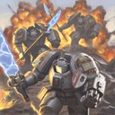
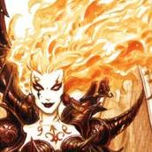

Forums galactiques > Assemblée Galactique : diplomatie officielle > Un Grand Pas pour l'Humanité
| Wensicia Corrino Respect diplomatique : 1642  14/07 ETU 17:36 | Score : 22 Détails A l'approche de chaque millénaire, l'Humanité se jetait dans une vaste folie : la fin du monde, imaginée ou réelle, provoquait l'oubli des valeurs de la Civilisation. Notre Galaxie n'y coupe pas. Aujourd'hui, la folie destructrice perdait deux des plus anciens commandants (Galactor et Straken), elle nous privait de la sagesse de Judayan et de certains Planitiens parce qu'ils embrassaient la Cause Terroriste.
La Fin approche, semble-t-il ... En tout cas, certains en sont persuadés et ont perdu toute notion de progrès, de civilisation et de réussites humaines. Je ne suis pas de ce bord-là. Depuis maintenant 8 mois, j'ai, au sein de l'Empire du Lion d'Or, oeuvré pour la Concorde, la Paix Civile. Voilà un bon mois, j'ai présidé un Conseil Galactique qui s'est vidé. Chaque discussion entamée demandait que je contacte chaque Représentant de chaque Coalition membre pour avoir un avis dont le caractère principal était le côté bâclé et expéditif. Le Conseil Galactique est donc mort, de la main-même de ceux qui y participait sur un pied d'égalité avec les autres Coalitions. Le refus de cette Mission me fait réfléchir depuis quelques semaines à de nouveaux horizons à atteindre, de nouvelles conquêtes que l'Humanité ferait sur l'Obscurantisme. Mon Passé, dans cette Galaxie, n'est pas aussi riche que certains comme Cassandra, Guillaume Tell, Straken ou Galactor voire Macastril (que cet Obsédé soit appelé le Boss pour toujours et que son nom soit maudit !). Pourtant, j'ai appartenu et milité dans les plus grandes Coalitions et je ne suis pas peu fière des résultats obtenus par l'Empire du Lion d'Or. Nous étions deux à sa naissance, rassemblés par l'Ambition et l'Amour. Ces deux sentiments n'ont pas disparu. Ils nous ont permis de recruter des membres convaincus de devoir sacrifier une partie de l'indépendance qui les caractérise pour mieux progresser et faire progresser les autres. La Galaxie va devoir se défendre des attaques terroristes de certains anciens planitiens. Nous ne pouvons donc nous permettre de perdre du temps en parlottes, en simagrées et en courbettes. Depuis 24 heures, les Légions de Sardaukars sont mobilisées pour détruire tous les adeptes de ce terrorisme nihiliste. Les membres de l'Empire du Lion d'Or seront en première ligne dans ce combat. L'appui des forces gouvernementales sera assuré afin de contrecarrer les plans machiavéliques de certains et nous ne cesserons cette Croisade que quand ils se seront rendus sans conditions et qu'ils seront désarmés totalement. Cette décision est certes dure mais elle est imposée par la Foi de certains en la destruction de l'Humanité. L'objectif de cette décision est la protection des Commandants de cette Galaxie souhaitant prospérer. Toute bonne volonté est acceptée d'avance ... Donc, la Galaxie va changer. L'Ordre, la Sécurité et la Prospérité seront maintenant les Commandements de chacun et pour tous. L'Ordre permettra d'organiser le Chaos et d'assurer à chacun la jouissance de son Empire, son Expansion et la Prospérité de tous. La Sécurité permettra de lutter efficacement contre le Terrorisme Nihiliste. La Prospérité permettra à chacun de profiter de ses réussites économiques, de ses réussites diplomatiques. J'impose ce changement à la Galaxie. Il sera toutefois discuté et j'en serai, avec l'Empire du Lion d'Or, la garante. Ainsi, un nouveau Conseil sera formé : les Coalitions qui s'y inscriront seront astreintes à une participation effective sous peine de représailles. Jouir d'un privilège ne peut se comprendre que par le respect d'engagements fermes et définitifs. Pour résoudre le cas des Commandants sans Coalitions qui souhaitent toutefois prendre une part active dans la vie diplomatique, je leur offre une tribune : la Coalition Gouvernementale. Elle sera à leur disposition pour abriter leurs discussions et leur permettra de s'organiser comme ils l'entendent. Ils auront le choix de désigner comme ils l'entendent leurs représentants au Conseil Galactique. Je pense, dans le dernier cas, à beaucoup de Commandants de cette Galaxie qui oeuvrent régulièrement à l'Assemblée Galactique. Je leur offre cette solution, en sachant bien qu'elle ne sera pas définitive. Je préfère, personnellement, qu'ils s'organisent entre eux. J'espère donc que ce tremplin leur permettra de trouver des points communs menant à l'expression de nouveaux avis et de nouvelles idées. Je rappelle aux sceptiques que les Terroristes disposent de moyens militaires considérables et que, face à ce danger, la rapidité d'action est primordiale. Il fadra donc sacrifier un peu pour survivre aux dommages, attaques et autres fourberies attendues. A l'heure où j'enregistre ce message, les premières attaques contre les terroristes tomberont dans quelques minutes. La guerre sera menée sans pitié, sans retenue et elle sera totale. Pour cela, les forces gouvernementales sont mobilisées et mises au service de ceux qui subiront des attaques de la part de ceux qui seront convaincus de Terrorisme Nihiliste. La Galaxie doit s'armer et s'organiser. S'armer pour détruire dans l'oeuf le Ragnarok de la Planitia Historique, s'organiser pour offrir à chacun sa place. Telle sera ma politique et l'engagement de l'Empire du Lion d'Or. Dans l'immédiat, l'Empire du Lion d'Or est à la chasse aux terroristes. Nous offrons l'aide nécessaire aux commandants victimes d'attaques des Terroristes du Ragnarok. Le combat sera long et difficile : des sacrifices seront à fournir de la part de tous ceux qui veulent vivre en paix. Mais, nous nous sommes engagés dans cette Voie contraints et forcés par les Planitiens Historiques. Nous acceptons, par avance, ces sacrifices parce que nous croyons en une Galaxie meilleure pas pour nos propres bénéfices. | ||
| Tyrian Respect diplomatique : 1334  14/07 ETU 21:28  | Score : 7 Détails Tyrian assistait au discours de sa bien aimée Impératirce et épouse et songeait une fois de plus à quel point il avait la chance d'avoir été, ..d'être l'élu de son coeur...
Il se délectait de chacun de ses mots ... Elle avait fière allure et malgré la situation savait rester sensuelle.... Il fut particulièrement touché lorsqu'elle avait mis en avant le fait qu'ils avaient été tous les deux à la base de leur actuelle coalition; l'une des plus solides et puissantes de la galaxie...Cette galaxie que certains....brigands voulaient mettre à feu et à sang.... Ils avaient déjà eu un avant goût de ce qui les attendait... | ||
| Davian Thule Respect diplomatique : 304  15/07 ETU 00:11 | Score : 9 Détails Alors que l'Impératrice venait de finir son discour et que Tyrian continuait de la devorer des yeux comme a son habitude , les portes de la salle d'audience s'ouvrirent a grand fracas et laissèrent entrer un homme d'une imposante stature ainsi que sa suite .
Marchant d'un pas souple , une arme à la main , le Grand Inquisiteur Davian Thule venait de pénétrer dans la pièce . metant genoux a terre , l'Inquisiteur salua le couple Impérial . " Salutations , Impératrice Corrino. Veuillez m'excusez pour cette longue absence mais des attaques traitesses ont perturbé les réseaux de l'Imperium , et même la Sainte lumiere de l'Astronomican fut voilé face a ces actes d'une bassesse sans précédent . Néanmoins , L'impérium ne s'avoue pas vaincu puisque 90% des territoires perdus ont déja été reconquis tandis qu'a cela s'ajoute 30% de nouveaux territoires . L'Imperium fait face , une fois de plus . Et vous pouvez compter sur son soutien quoi qu'il arrive ... " Se relevant , l'Inquisiteur leva son regard vers l'Impératrice et la regarda droit dans les yeux ... | ||
| Wensicia Corrino Respect diplomatique : 1642 15/07 ETU 01:52 | Score : 9 Détails Un sourire ... Davian Thule avait toujours su montrer son attachement depuis que la Maison Corrino lui avait donné les vaisseaux nécessaires pour remplir sa mission de protection de l'Humanité. Un attachement complet qui embrassait l'Etiquette, un attachement qui n'impliquait pourtant pas sa servilité mais bien son indépendance et le respect dû au travail qu'il accomplissait.
"Cher Inquisteur, rassemblez vos Chapitres. Il y a du travail pour tous ceux qui vénèrent l'Humanité. Vos Marines auront de nouvelles occasions de se montrer à la hauteur des tâches confiées. Ils auront, sous peu, de nouveaux noms de batailles à ajouter sur leurs étendards et de nouvelles cicatrices à arborer et à commenter." | ||
| Alnia. Respect diplomatique : 867  15/07 ETU 03:55 | Score : 10 Détails J'en suis attristée, mais je crains fort que nous devions collaborer, pour le coup, mon p'tit Inquisiteur préféré...
Heureusement que je ne vous ai pas oblitéré la dernière fois. Il aurait été dommage que vous ne puissiez montrer la barbarie dont savent faire preuve vos marines en ces heures si graves. Une barbarie dans le plus pur style déviant, si je puis me permettre. Vous aurez la chance d'admirer ce qu'est la déviance. Mais du "bon côté" de l'éventreur... Allons donc régler leur compte à ces faux dieux. Ca me passera les nerfs... | ||
| Tyrian Respect diplomatique : 1334 15/07 ETU 11:19 | Score : 7 Détails Les choses semblaient se précipiter et Tyrian, qui espérait s'éclipser discrètement pour se rendre à un rendez-vous, se fit une raison... Le soi-disant chien qui n'aboie pas connement à chaque caravane qui passe attendra....
Tyrian apprécia la soumis.....hmmm...la ..ttitude du très vénéré Davian Thulle. Peut-être qu'il y avait un peu trop d'intensité dans son regard lorsqu'il fixa très longuement l'Impératrice,,,,mais Tyrian n'était pas un homme jaloux contrairement à certaines rumeurs stupides.... Puis, il y avait cette Alnia la déviante qui l'intriguait... C'était la première fois qu'il la voyait de si près... Bref, une fois de plus, il allait devoir rester assis comme un c... fidèle époux, assis, quelques centimètres plus bas que l'Impératrice, à entendre toutes ces ..... choses passionnantes… | ||
| Davian Thule Respect diplomatique : 304 15/07 ETU 11:42 | Score : 5 Détails L'Inquisiteur considéra le Démon puis il prit la parole ...
" Dame Alnia , Même si vous êtes une créature chaotique proche du rang de Démon Majeur , les circonstances actuelles font que la collaboration est notre meilleure option pour permettre notre survie . Bien que cette idée me gène , nous collaborons . Mes Space Marines se battront au coté de vos troupes . Nos chapitres sont déjà en marche et nombreux sont les systemes qui sont déjà tombés sous la tutelle de l'Empereur . J'attends de vous une collaboration sans traîtrise . Bien que les concepts d'honneur et de fidélité doivent vous être méconnu voir inconnu , J'espère ne pas avoir a me retourner contre vous pendant cette campagne ... " L'Inquisiteur essaya de sonder l'âme de la créature a l'apparence humaine aux formes généreuses . Mais il ne trouva que noirceur et chaos ... | ||
| Sorcier82 Respect diplomatique : 254  15/07 ETU 12:24 | Score : 7 Détails Sorcier était dans le coin de la salle adossé au mur. Il avait son petit sourire narquois et restait muet. Il était dans ses pensées.
"Voilà une nouvelle ère pour la galaxie qui commence. Même les pires ennemis s'allient. Cela devient vraiment palpitant. Que nous reservera la suite?" Après sa reflexion, il prit la parole: Chers commandants, aujourd'hui, nous mettons de côté nos différents pour combattre un ennemi commun. Si cela continue comme ça, notre ennemi sera écrasé en quelques jours. Je tiens à dire aux dieux que leur fin est proche. Sorcier attendit en regardant tous les commandants présents. | ||
| Shiranui Respect diplomatique : 227 15/07 ETU 23:51 | Score : 6 Détails Après les paroles du commandant Sorcier, Shiranui intervint :
En effet ces alliances sont à la fois surprenantes et agréables... Je me joins donc à vous personnellement, vous pourrez aussi compter sur l'aide de quelques membres du Haut Conseil Céleste. | ||
| Tyrian Respect diplomatique : 1334 16/07 ETU 10:50 | Score : 2 Détails Tyrian leva son c...se leva de son siège un peut trop confortable à son goût suite à l'intervention du commandant Shiranui.
--Commandant Shiranui ! ........ Nous apprécions votre empressement à vous joinde à ce mouvement qui, n'en doutons pas, balayera sur son passage toute mauvaise graine qui tentera de germer dans cette galaxie... Mais, s'il est vrai que l'Impératrice a accepté l'allégence de certains, la contribution de quelques autres, je n'ai pas souvenir que vous vous soyez prosterné devant elle... L'Empire se passera donc de votre soutien pour l'instant... Sur ces mots, Tyrian toisa du regard l'ex-homme nain, ex-homme loup, actuelle figurine japonaise, la/le futur on ne sait trop quoi/qui... Et attendit... | ||
| Shiranui Respect diplomatique : 227 16/07 ETU 11:18 | Score : 3 Détails Shiranui répondit à Tyrian:
Commandant Tyrian, Je ne me suis pas prosterné devant l'Impératrice, et cela n'arrivera sans doute jamais. Je reconnais son titre honorifique d'Impératrice, mais je ne lui prêtrai jamais allégence. Cela ne m'empêche pas de venir vous aider, je ne le fais pas pour vous, je le fais pour moi, je veux participer à cette action anti-terroriste... De plus, savoir tous ces peuples s'unir dans un but commun n'arrive pas tous les jours... | ||
| murphi Respect diplomatique : 134  16/07 ETU 11:25 | Score : 6 Détails Le duc se leva....
Cher Tyrian (Ou Tyty pour les intimes), pouvez vous être gentil pour une fois avec les autres, non je rigole aller à quatre pattes le loup....Aller, fais du baise pieds a l'impératrice!Pas trop non plus tout le monde sait que Tyrian est impeu jaloux... Amicalement. | ||
| Orélia Respect diplomatique : 186 16/07 ETU 12:35 | Score : 7 Détails
Commandantes, Commandants, Bonjour à tous. Permettez-moi de saluer l'initiative de l'Impératrice; tenter de bloquer les assoiffés de guerre est une mission noble et nécessaire. Nous y participons, nous, les petits, en résistant tant bien que mal. Nous voyons parfois poindre la victoire, mais aussitôt l'horizon s'obombre. Car en effet, le bon esclave de feu le pauvre Larry dépense avec frénésie toute sa fortune pour nous contraindre à mourir. Eh oui! Cadeyrn Sollidor n'est pas un grand de ce monde, il est même plutôt minable. Mais, voyez-vous, il constitue pour nous un ennemi redoutable. Ma situation n'a pas fort changé, je possède toujours 142 CLA que je ne peux pas utiliser faute de posséder les technologies requises. On reste donc pantois devant le courage et l'utilité des actions du bon Sollidor. Je vous demande donc humblement, chère Impératrice, chers Conseillers, de bien vouloir ranger Sollidor avec les terroristes; quoique je ne vous en voudrais pas de l'inscrire dans la case "Petits terroristes minables dont on s'occupera en chemin vers les grandes missions plus importantes". Car ce qui m'importe, c'est que d'une façon ou d'une autre, vous lui fassiez comprendre qu'il est de trop de mon système. Enfin, au risque de me faire des ennemis à la Cour, j'aimerais remercier le Commandant Shiranui pour son aide, lorsque la Cour pensait encore à autre chose; et de même pour son offre de participation à l'effort de guerre. Je déplore grandement l'accueil qui fut réservé ici-même à son volontarisme de la première heure. J'ajouterais que si le Commandant Tyrian a pour lui l'excuse de s'être depuis longtemps "perdu dans son costume" - quoique son intervention salisse inoportunément la déclaration impériale -, le Commandant Murphi, en revanche, n'a pas d'excuse. Nous ne l'avons jamais vu. Il parle mal; il n'est pas drôle, et il manque de respect à un ami, qui est aussi un défenseur des petits commandants. Murphi, en tentant de vous gausser stupidement du Commandant Shiranui, vous nous prouvez que vous, en tout cas, êtes à même de faire du lèche-pied à l'Impératrice. Tandis que vous viviez dans l'ombre des grands, proférant en vain de viles flagorneries, le Commandant Shiranui, lui, s'est déployé noblement au service de causes qui vous dépassent. Comme ça, les choses sont claires. Commandantes, Commandants, je vous salue. | ||
| Sorcier82 Respect diplomatique : 254 16/07 ETU 13:08 | Score : 3 Détails Commandante,
en tant que conseiller et membre de l'empire du Lion d'or, je vous ai entendu et ma réponse sera la suivante: Pour ma part il n'est pas nécéssaire de le mettre dans le même sac que les terroristes, puisque cela est réservé à ceux qui en vaillent la peine. Mais ce n'est pas dans mon habitude de laisser faire les commandants destructeurs sous peine qu'ils soient jeunes ou encore petits. Alors pour remedier à ce grave problème qui vous touche, je souhaite que vous me contactiez en privé, et je vous aiderais en vous fournissant de quoi vous défendre convenablement. J'espère que cela vous suffira. | ||
| murphi Respect diplomatique : 134 16/07 ETU 13:18 | Score : 6 Détails Ma chère Orélia, je ne me cache pas dans l'ombre des grands, si je n'ai pas été fort présent a l'assemblée ces derniers jours, c'est qu'il fallait aider les petits commandants comme vous, arrêtez de pleurer, et, je suis pour cette quête, je suis dans la coalition de l'impératrice, donc je me remue pour défendre la galaxie des terroristes!
Donc, ne venez pas me faire la morale, car je suis surement plus réactif que vous! Avec vos beaux discours, vous n'aidez pas à la prise de planètes! Pour les pieds de l'impératrice, je ne les lèche pas, j'enlève juste la corne du talon, après je les fais revenir à la peule, c'est fameux! Amicalement. PS: Envoyez moi un mp, je peu vous aider. | ||
| Wensicia Corrino Respect diplomatique : 1642 16/07 ETU 15:07 | Score : 6 Détails Chère Orélia,
A ce jour, tous les Planitiens sont déclarés coupables de Terrorisme Nihiliste, sans exceptions. En tout cas, nos forces d'assaut ne font aucune exception quand elles attaquent. Cadeyrn Sollidor est donc ajouté à la liste des proscrits et des Commandants à combattre. Maintenant, c'est la seconde fois que je me dois de vous rappeler de ne plus traiter les membres de l'Empire du Lion d'Or comme mes esclaves: ils en sont loin et ne supporteraient pas une telle situation très longtemps. Je vous signale, maintenant, qu'il n'y aura pas, de ma part, de troisième avertissement : il se fera sous la forme des assauts de mes Sardaukars. Si vous ne savez pas, vous-même, mettre à profit vos propres déclarations pour vous-même, je saurai vous les inculquer par la force. Il se peut que vous compreniez mal les principes d'un féodalisme tel que celui de l'Empire du Lion d'Or mais cela n'excusera plus vos dérapages. Je discute avec le Commandant Shiranui et je pense avoir de bons rapports avec lui. Il est suffisament "grand" pour se défendre lui-même quand certains propos sont déplacés. Il n'a pas besoin, à ma connaissance, de "nounou" galactique. | ||
| romi Respect diplomatique : 74 16/07 ETU 15:19 | Score : 1 Détails Romi fut interloqué par la réponse de son Impératrice à la comandante Orélia ,son honneur était touché...romi se demanda si c'etait bien lui qui était cité comme tel.
Hum...elle a déja asser de soucis comme ça se dit romi ,laissons donc le destin la guider ,puisse t'il etre formidable. | ||
| Shiranui Respect diplomatique : 227 16/07 ETU 17:16 | Score : 1 Détails Shiranui se tourna vers Orélia :
Tout d'abord, merci d'avoir pris ma défense, Orélia. Il se tourna ensuite vers Romi. En quoi l'honneur d'Orélia serait-il touché ? Défendre un ami quitte à se faire des ennemis est justement honorable... Et se tourna enfin vers l'Impératrice: Madame Corrino, vous savez donc que je vous aiderai à éliminer ces terroristes. Shiranui se rassit. | ||
| Orélia Respect diplomatique : 186 16/07 ETU 17:40 | Score : 6 Détails
Commandant Sorcier, Je vous remercie pour votre proposition généreuse; je vous contacte par mp dès ce soir. --------------------------- Commandant Murphi, Vous êtes certainement très réactif; quant à savoir si vous l'êtes plus que moi, c'est une affaire de définition. Pour ce qui concerne la prise de planètes, j'en ai pris environ soixante à quatre-vingts en six jours. Ce sont toujours les mêmes, et elles me sont toujours reprises par qui-vous-savez. Si vous voulez nous expliquer que vous êtes plus riche et plus puissant que moi, n'argumentez plus, je vous crois sur parole. Par ailleurs, je ne pleure pas; je vous enseigne le respect que vous devez à mes amis. Ca n'est pas la même chose. --------------------------- Votre Excellence, Ma Dame Corrino, Je n'en attendais pas moins de vous. Sollidor est effectivement un terroriste pour les populations que je protège. Pour ce qui concerne vos coalisés, je ne les prends pas pour vos esclaves, je constate qu'ils s'adonnent volontiers à la flagornerie. Cela ne me dérange pas, sauf lorsqu'ils se comportent de manière éhontée à l'encontre de mes amis. Si vous êtes en bons termes avec le commandant Shiranui - ce dont je ne doute pas -, pourquoi laissez-vous vos coalisés l'insulter publiquement et devant vous? Serait-ce une mise en scène codée, ou dois-je y voir quelque farce infâme? Quoiqu'il en soit, j'estime devoir intervenir lorsque mes amis sont la cible de tels comportements indignes. Certes! Le Commandant Shiranui est assez grand pour se défendre seul, mais un soutien diplomatique vaut mieux qu'un silence complice. Du moins, c'est ce que je pense. Alors, non! Je ne suis la "nounou galactique" de personne; je ne fais qu'apporter aide et soutien diplomatique à mes amis, à défaut de pouvoir leur apporter une aide militaire. Or je pense que vous, Ma Dame, êtes sans doute la mieux placée pour reconnaître qu'en politique, il est primordial de rassembler les suffrages au sein de l'Assemblée. Ne feignons donc plus de confondre "loyauté" et "maternité", sinon je pourrais finir par croire, dans la confusion, que vous êtes la "nounou" du Commandant Murphi, puisque vous avez pris sa défense, comme moi j'ai pris la défense du Commandant Shiranui. Bien à vous, Ma Dame. --------------------------- Commandantes, Commandants, bonne fin de journée. | ||
| romi Respect diplomatique : 74 16/07 ETU 18:25 | Score : 1 Détails Je ne sais comment vous faites pour lire dans les pensées commandant Shiranui mais ,c'est exact ,mon honneur est baffoué.Je ne suis l'esclave que de moi meme...
|
Forums galactiques > Assemblée Galactique : diplomatie officielle > Un Grand Pas pour l'Humanité